Modifications
Modifications that most significantly
impacted Millie's dry weight include a tongue box
(+24 lbs), a 140Ah LiFePO4 battery (+28 lbs), a foam
and spring mattress (+38 lbs, 38 lbs more than
original foam mattress), high-density foam in 2 of
the dinette cushions (+8 lbs, 8 lbs more than
original foam), 20 lbs of propane (+20 lbs), and
removal of the microwave/convection oven (-48 lbs).
Collectively (net effect), these modifications added
70 lbs.
Other modifications, described below, had little
effect on Millie's weight.
|
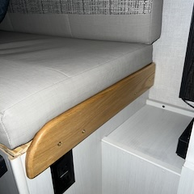 Screws fastening the
original, rather flimsy, dinette cushion retainers
pulled out after our first use of the dinette.
Replacements are made of solid oak and are fastened
with more substantial screws. |
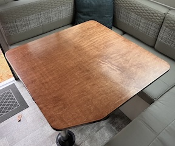 We found
that the dinette table was heavier than necessary,
that it lacked a trimmed corner for easier access to
the driver's side bench seat, and that the receivers
for the pedestal tubes on the underside of the table
were somewhat misaligned. We fashioned a custom
replacement table out of cabinet-grade plywood. |
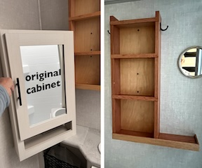 We also found that the
original cabinet over the sink in the bathroom was
only marginally fastened to the wall. Screws on the
entire right side of the cabinet missed the intended
stud in the wall. The cabinet was destined to fall
while traveling, as other owners have experienced.
The cabinet was also heavier than necessary. In its
place, we installed a set of shelves.
images: original cabinet and its replacement (left)
and its replacement (right) |
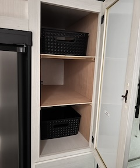 We converted the wardrobe
to shelves, which better serve our needs. Our
shelves have no fasteners or glue. The sides, with
shelf supports, are held in place by the shelves,
all of which can be readily removed. |
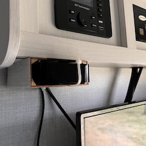 We added a bracket for our
Apple TV (device), made of materials salvaged from
other modifications. |
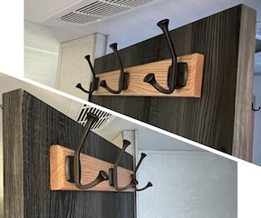 We installed
large hooks on the inside and outside of the
bathroom door.
images: hooks on the outside of the bathroom door
(upper right) and on the inside of the bathroom door
(lower left) |
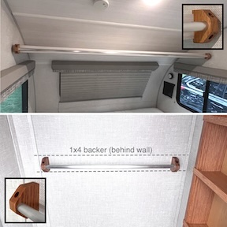 We installed
a long (6-ft) towel rod to the front edge of the
shelf over the bed and a 27-inch towel rod in the
bathroom, over the toilet. Conveniently, their was a
horizontal 1x4, at a height of 61", in the bathroom
wall that served perfectly as a "backer" the towel
rod. Insets show oak brackets.
images: towel rod in the bedroom area (top) and in
the bathroom (bottom) |
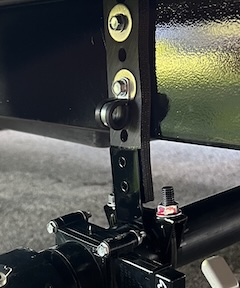 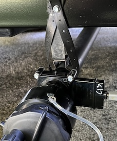 We replaced brackets for black- and
gray-tank drain pipes with heavy-duty exhaust-pipe
hangers and clamps, as many other R•Pod owners have
done.
images: original hanger (left) and exhaust-pipe
hanger (right) for gray-tank drain pipe |
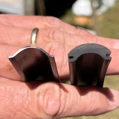 We replaced
the original vinyl trim (left) with Steel Rubber
Products, dense extrusion trim, 7/8" insert molding
(right), but only after replacing the original
screws with stainless and sealing them with a dab of
Dicor sealant. Unlike the original trim, the new
trim fits over the edge of the track, making it more
effective at shedding water. The new trim is also
sufficiently robust to stay in place without end
caps, leaving the ends open to drain any water that
does get in. End caps on the original trim retained
water. |
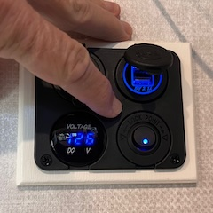 We replaced
the original USB ports under the TV with a panel
that includes USB and 12V ports and a volt meter.
The outlets are controlled with a rocker switch. The
volt meter is controlled by a momentary
(push-button) switch. |
Added Storage
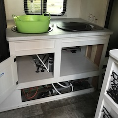 We made several
modifications to add 9.1 cubic feet to Millie's
meager original storage space. These modifications
are described below.
For one thing, we removed the microwave/convection
oven, from under the stove, and the original
bulkheads that limited the available space under the
sink. |
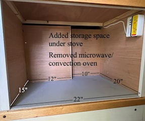 The space under the stove,
where the oven was, was converted into 2.6 cubic
feet of storage with 110 AC and USB outlets. |
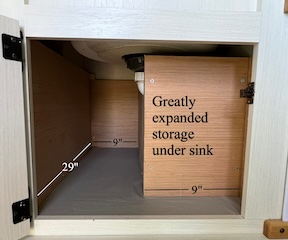 The original
0.5-cubic-foot storage area under the sink was
extended to the outside wall of the slide, adding
1.6 cubic feet to its capacity. The original storage
area was 18 inches wide and just a few inches deep.
|
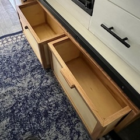 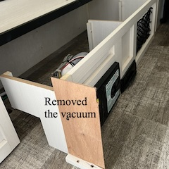 We removed the central vacuum and, in
its place, installed a set of drawers. The 2 drawers
provide 1.8 cubic feet of additional storage.
images: removed vacuum (left) and drawers (right) |
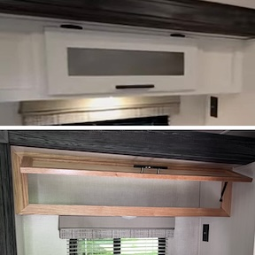 We replaced
the original door to the cabinet over the stove and
sink with a less restrictive, full-width cabinet
door.
images: original cabinet door (top) and and
full-width cabinet door (bottom) |
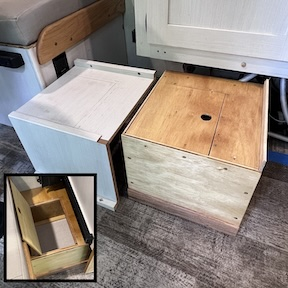 We installed a
1-cubic-foot storage box (right) to the replace the
empty platform (left) that originally occupied the
space between the slide and the dinette. Inset shows
the storage box with the lid open. |
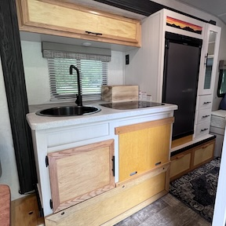 In the end (current state
of modification), the kitchen area looks like this
(right). The slip-in doors for the storage area
under the stove were originally made of white
cutting board material. We favored the appearance of
wood. |
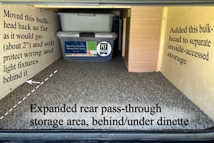 We expanded the rear
pass-through storage locker slightly and otherwise
modified it to provide easy access to part of that
space from inside, through hatches under the dinette
cushions. |
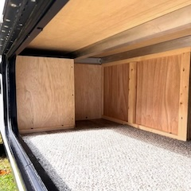 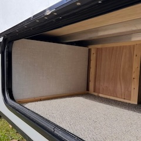 We also expanded the forward storage
locker slightly.
images: original bulkhead (left) and reconfigured
bulkheads (right) in forward storage locker |
|